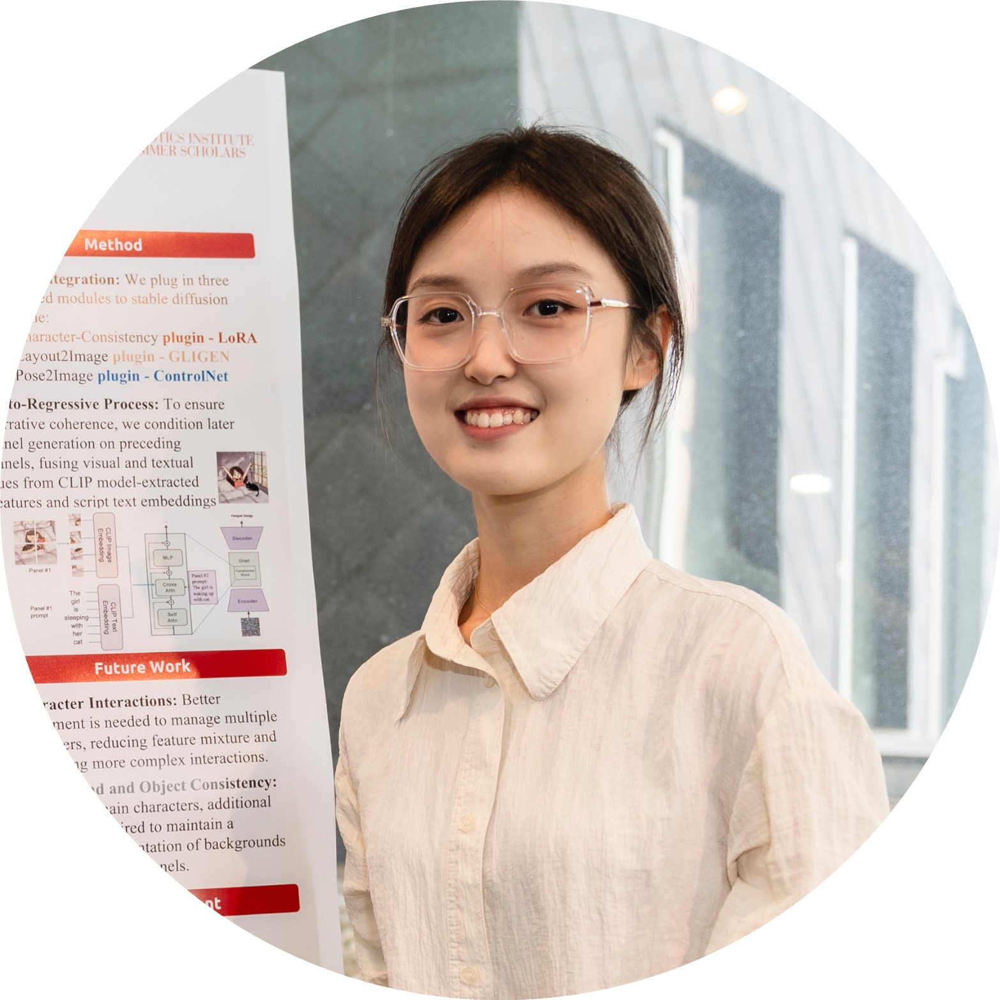

|
Wenxuan Peng I am a first-year CS PhD student at Cornell University, supervised by Prof. Bharath Hariharan. I am also collaborating with Prof. Hadar Averbuch-Elor. Before that, I obtained my Bachelor’s degree in Computer Science from Nanyang Technological University in Singapore. I've had the opportunity to dive into research at MMLab@NTU, guided by Prof. Ziwei Liu. I also spent a summer as a research intern in roBot Intelligence Group at Carnegie Mellon University, mentored by Prof. Jean Oh. I also work with Prof. Deva Ramanan on assessing the robustness of vision-language foundation models. My research interest focuses on developing highly controllable and compositional generative models that empower creative and interactive content creation and manipulation. Additionally, I’m also interested in multi-modalities research and advancements in vision-language models and visual reasoning tasks. Google Scholar / Email / Github / LinkedIn |
 |
Baiqi Li*, Zhiqiu Lin*, Wenxuan Peng*, Jean de Dieu Nyandwi*, Zixian Ma, Simran Khanuja, Ranjay Krishna, Graham Neubig, Deva Ramanan
NeurIPS D&B, 2024
project page / paper

Wenxuan Peng, Peter Schaldenbrand, Jean Oh,
NeurIPS Workshop on Machine Learning for Creativity and Design, 2023
paper

Jingkang Yang, Wenxuan Peng, Xiangtai Li, Zujin Guo, Liangyu Chen, Bo Li, Zheng Ma, Kaiyang Zhou, Wayne Zhang, Chen Change Loy, Ziwei Liu,
CVPR, 2023
project page / paper / code

Jingkang Yang, Jun Cen, Wenxuan Peng, Shuai Liu, Fangzhou Hong, Xiangtai Li, Kaiyang Zhou, Qifeng Chen, Ziwei Liu,
NeurIPS, 2023 (Spotlight)
paper / code